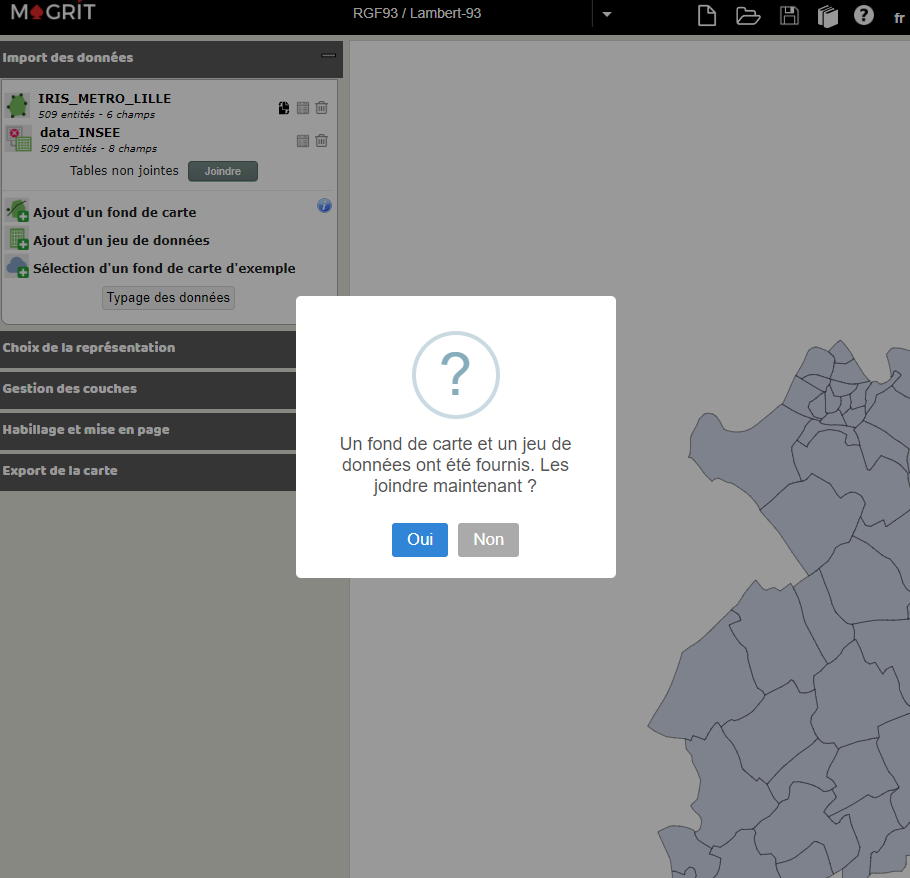

Présentation de l’application de cartographie thématique Magrit 🌍
19 Décembre 2023 - Université du Sine Saloum El-hâdj Ibrahima NIASS
Introduction

Aux origines de la sémiologie graphique

“Si pour obtenir une réponse correcte et complète à une question donnée (…) une construction requiert un temps d’observation plus court qu’une autre construction, on dira qu’elle est plus efficace pour cette question”
Il développe une grammaire graphique en lien avec l’information à représenter (les données).

Variables visuelles et implantation


Variables visuelles et implantation


Propriétés des variables visuelles

Des données aux variables visuelles

Des données aux variables visuelles

Exprimer la différenciation
Exprimer la différenciation

Exprimer des quantités

Exprimer l’ordre
Quelle discrétisation choisir ?

Les méthodes


Les méthodes

Géométries
Elles définissent la forme et la localisation de l’objet à cartographier sur la surface terrestre.
La position des géométries est toujours exprimée dans un système de coordonnées explicite : coordonnées géographiques (latitude / longitude) ou coordonnées projetées (X / Y).

Vecteurs et rasters
2 types de données sont à différencier : le raster et le vecteur.
Raster
C’est une image (plan scanné, photographie aérienne, image satellitaire…) localisée dans l’espace.
L’information géographique est alors stockée dans des cellules (pixel) contiguës généralement carrées.
Chaque pixel défini par une résolution possède des valeurs qui peuvent être traitées et cartographiées.

Vecteurs et rasters
2 types de données sont à différencier : le raster et le vecteur.
Vecteur
Il s’agit d’objets géométriques de type points, lignes ou polygones.
Ces objets vectoriels ne pixelisent pas. On parlera néanmoins de niveaux de généralisation pour qualifier leur niveau de précision (parfois aussi appelée résolution).
Chaque objet est défini par un identifiant unique.

Vecteurs et rasters
2 types de données sont à différencier : le raster et le vecteur.

Niveaux de généralisation
Le choix du niveau de généralisation adapté dépend des objectifs de la carte, de l’emprise de espace d’étude, et des caractéristiques des polygones du fond de carte.

Données attributaires
L’ensemble des informations relatives à un objet géographique, qui le décrivent et le caractérisent.

Pourquoi faire ?
Les géométries contiennent parfois quelques attributs statistiques, assez limités pour initier des analyses ou produire des représentations cartographiques.
Il est toutefois souvent nécessaire de compléter les géométries avec des données attributaires (venant d’autres sources : instituts statistiques, ONG, etc.).

Comment faire ?
L’enrichissement de données attributaires au format tabulaire (.csv, .xls, .ods, etc.) est réalisé par une jointure attributaire.
Elle d’associer deux tables attributaires décrivant des entités communes. L’opération produit une seule table juxtaposant les champs de la table à joindre à ceux de la table d’origine.
Avec les logiciels de cartographie / SIG, la table d’origine est souvent associée aux géométries.
Les jointures attributaires sont utilisées pour introduire des informations nouvelles dans une couche géographique.

Source : Université Virtuelle Environnement et Développement durable, glossaire des SIG
Comment faire ?
La jointure attributaire est une fonctionnalité de base des logiciels de cartographie thématique ou de SIG.


Un outil complet

Un logiciel libre et gratuit
Le projet Magrit a démarré courant 2016. C’est un projet libre, sous licence CeCILL (une licence compatible avec la licence GPL).

Le code source est disponible sur GitHub : https://github.com/riatelab/magrit.

Une application Web
Magrit est une application Web, c’est à dire qu’elle fonctionne directement dans un navigateur Web et donc avec n’importe quel système d’exploitation (Windows, MacOS, Linux, …).

Une application multilingue
Magrit est disponible en français, anglais et espagnol (Amérique latine).

La chaîne de traitement
Les menus de l’application suivent les étapes d’une chaine de traitement de l’information géographique :

Différents types de représentations cartographiques
Des représentations cartographiques classiques

Des représentations cartographiques combinées

Des représentations cartographiques “avancées”

Des représentations cartographiques “avancées”

Également “carte de liens”, “carte qualitative (pictogrammes)” et “waffle map” (2 variables de stocks ou plus)

Mise en page

Différents types d’exports disponibles
Magrit permet d’exporter les cartes réalisées dans différents formats :
- PNG (par ex. pour une utilisation directe dans un rapport ou une présentation)
- SVG (par ex. pour permettre une édition ultérieure dans un logiciel de dessin vectoriel comme InkScape ou Adobe Illustrator)

Utilisée pour l’apprentissage de la cartographie thématique à l’université

Autour de Magrit…
- Magrit dispose d’une documentation complète en français : https://magrit.cnrs.fr/docs/.

Autour de Magrit…
- Des supports de formations (comprenant slides de cours et exercices), préparés par l’UAR RIATE, sont mis à disposition sous licence CC-BY-SA : https://github.com/magrit-formations.


Exemple de support de formation ⤴
⬅ Page d’accueil du dépôt des supports de formation
Autour de Magrit…
- Un carnet de recherche est également disponible sur la plateforme Hypotheses : https://magrit.hypotheses.org/.

Perspectives de développement
Un logiciel en développement actif…
Amélioration / refonte de l’interface utilisateur
Intégration de nouvelles fonctionnalités (analyses statistiques bivariées ou multivariées, personnalisation de nombreux éléments, etc.)
Facilitation de l’installation sur un poste de travail personnel


Merci de votre attention ! 🙏
Magrit : https://magrit.cnrs.fr/
Documentation : https://magrit.cnrs.fr/docs/
Dépôt GitHub : https://github.com/riatelab/magrit
Supports de formation : https://github.com/magrit-formations
Slides : https://mthh.github.io/Magrit-presentation-USSEIN-2023/
Contact : matthieu.viry@cnrs.fr

Comment procéder ?
1. Résumer la série statistique
Ces paramètres indiquent la valeur “typique” autour de laquelle les observations sont réparties.
Ces paramètres mesurent de l’écart des valeurs d’une distribution à une valeur centrale.
2. Analyser la forme de la distribution
essaim d’abeilles (beeswarm), etc.
3. Déterminer les intervalles des classes
les intervalles de classes…